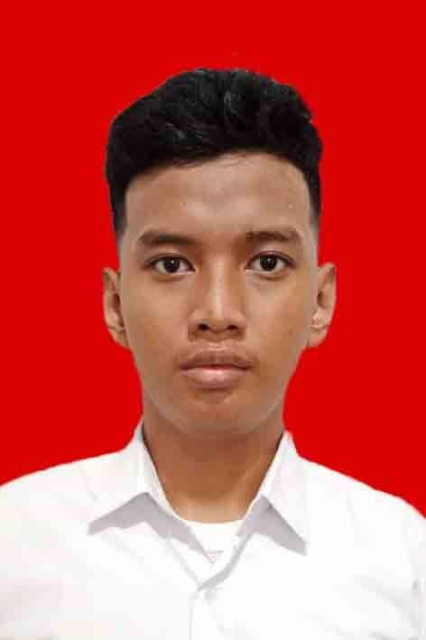
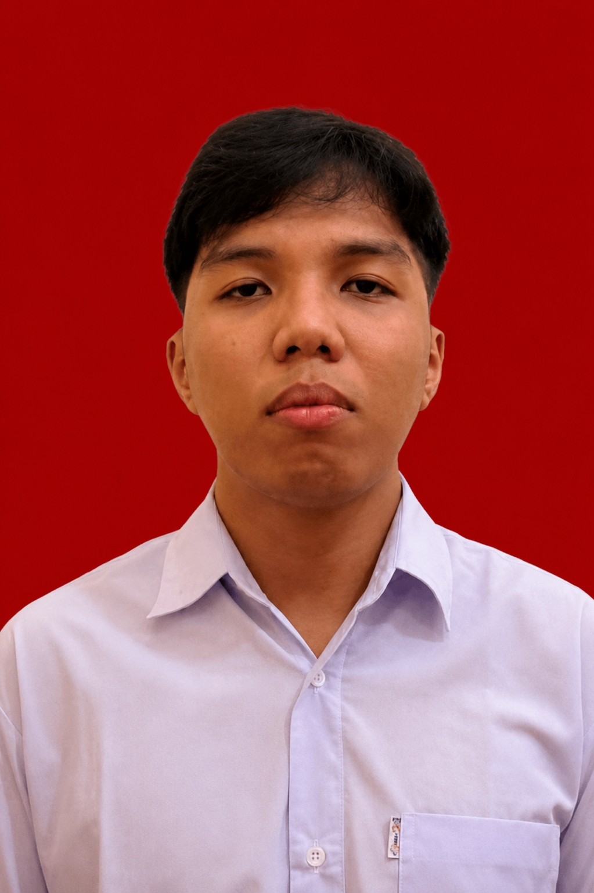

RECYNT AI adalah sistem deteksi sampah berbasis kecerdasan buatan yang mengenali, mengklasifikasikan, dan menyortir limbah secara otomatis dan real-time — mengubah tempat sampah biasa menjadi titik daur ulang pintar.
Setiap objek yang melewati konveyor atau difoto lewat aplikasi mobile diproses melalui pipeline yang sama, dari akuisisi gambar hingga insentif untuk pengguna.
Kamera konveyor atau kamera ponsel menangkap gambar objek sampah secara real-time.
Model YOLOv8 mendeteksi bounding box & mengklasifikasikan jenis sampah dalam hitungan milidetik.
Sistem menghitung estimasi pengurangan emisi CO₂ berdasarkan kategori sampah yang terdeteksi.
Pengguna mendapatkan eco points yang dapat dipantau di leaderboard komunitas.
Klasifikasi objek sampah secara instan dengan latensi rendah menggunakan YOLOv8.
Pantau statistik deteksi, riwayat, dan dampak lingkungan secara personal maupun agregat.
Sistem gamifikasi yang memberi insentif poin untuk setiap deteksi sampah yang berhasil.
Setiap deteksi dikonversi menjadi estimasi pengurangan emisi CO₂ yang transparan.
Sistem login berbasis JWT dengan enkripsi password untuk melindungi data pengguna.
Rekomendasi cara mendaur ulang yang tepat untuk setiap kategori sampah yang terdeteksi.
Model dilatih untuk mengenali kategori sampah rumah tangga & industri yang paling umum ditemukan.
Aplikasi mobile (Flutter) dan website mengonsumsi API yang sama dari backend, yang meneruskan gambar ke AI service berbasis YOLO.
Simulasi alur penggunaan lewat aplikasi mobile: foto sampah, sistem mendeteksi, lalu poin & dampak karbon langsung tercatat.
Kategori: Plastik · Estimasi 0.08 kg CO₂ terselamatkan
Beberapa mahasiswa yang sudah mencoba RECYNT AI membagikan pengalamannya.
Deteksinya cepat banget dan akurat, jadi lebih semangat milah sampah karena ada eco points-nya.
Tampilan dashboard-nya rapi, gampang dipahami, dan estimasi CO2 yang ditampilkan bikin lebih sadar lingkungan.

Sistem klasifikasinya membantu banget buat tugas kuliah, sekaligus jadi kebiasaan baik buang sampah pada tempatnya.
